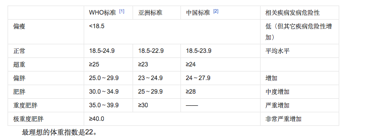

关注世界各国人民饮食结构和身体健康，探讨更为有益身体健康的饮食结构。对2000年-2013年十余年来的世界各国身体素质及饮食结构作出解读，并对案例国家的饮食情况进行了进一步的探讨、分析和预判，以此期望能对现象之下的其他问题有所思考。
以网页为呈现载体，以WHO的公开数据作为数据源进行展开，以时间变化为节点，以多样化设计的数据图表直观地反映核心数据内容，主要通过图文结合的方式呈现作品。
我们将BMI值作为衡量一个国家是否健康的测度。根据WHO标准，我们设定认为BMI值在18.5～24.9的认为是健康情况；小于18.5为偏瘦不健康，大于25为超重，也认定为不健康。标准详细要求如下：

我们以13年为例用热图、树形图和气泡图对健康情况进行了展示；同时通过筛选找到了13年的健康国家和超重国家。
进一步我们作出对健康国家进行不同年份的纵向比较：发现从10年-13年，中东亚和中非南非区域人均BMI处于健康范围内。

我们再对超重国家进行不同年份的纵向比较：发现从10年-13年，大部分发达国家以及拉丁美洲和太平洋国家都属于超重范围内。


从图中我们可以看出，世界各国的饮食结构可分为3类 一类偏爱奶制品，以美洲，澳洲和欧洲人为代表 其BMI均在25以上，相对来说也更加肥胖 一类偏爱五谷杂粮，以非洲和南亚地区的人为代表 其BMI在18.5~24.9之间，相对来说较为健康 还有一类偏爱肉制品，以中国人为代表，还有萨摩亚等岛国 其BMI也普遍在18.5~24.5之间，较为健康 还有部分地区如卢旺达，乌干达等以蔬果为主

策划&制作：
刘雪铃，宋雪川，彭紫晴
数据来源：
联合国粮食与农业组织